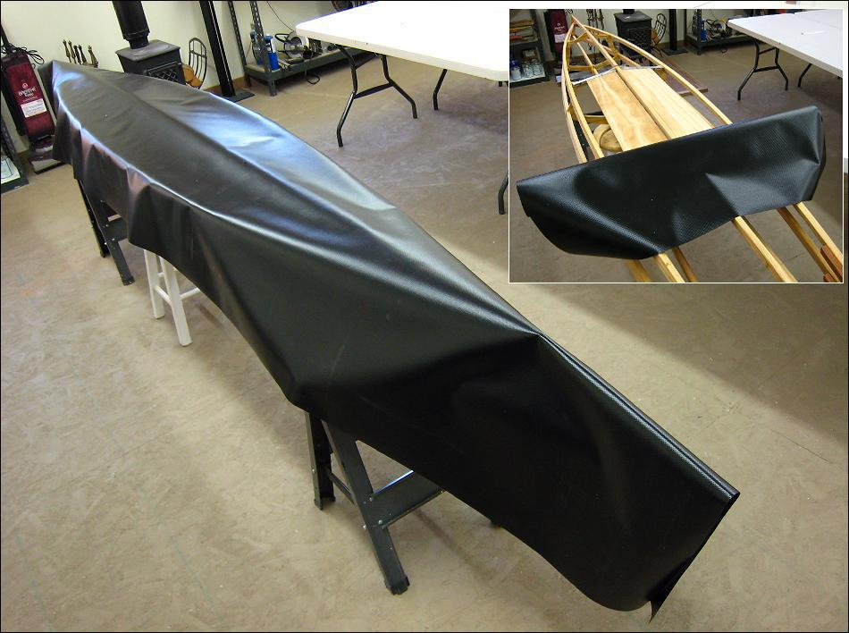

PVC Skinning (Hull)
Menu
Previous Page
Next Page

Roll out the skin along the keel. Position the 14' 6" X 36" skin so that there are approximately 2" of overhang on each side at the center, and approximately 6" of overhand at the ends.